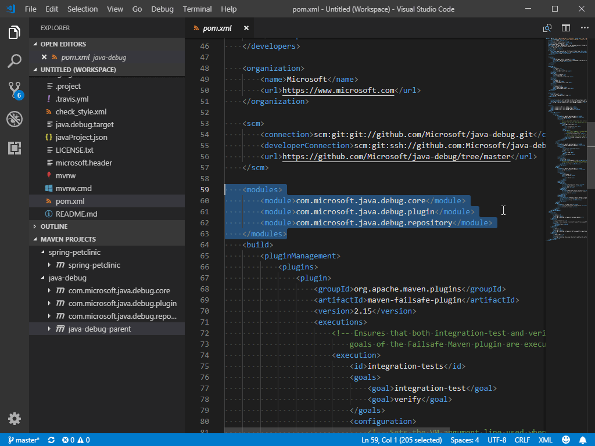
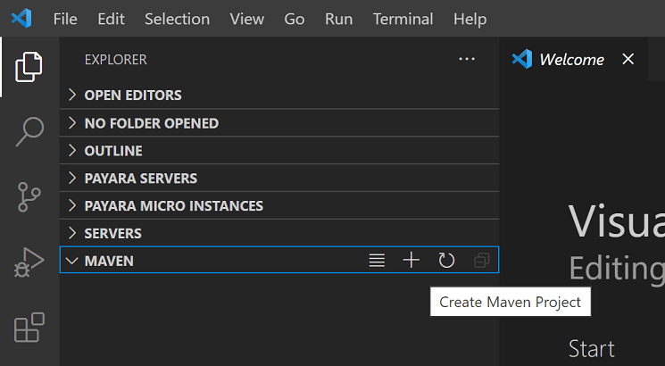
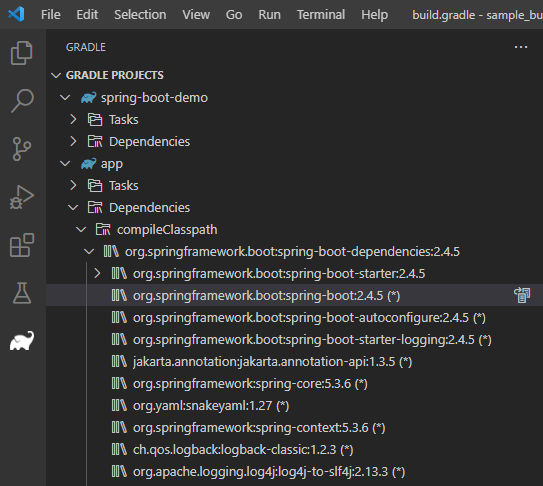
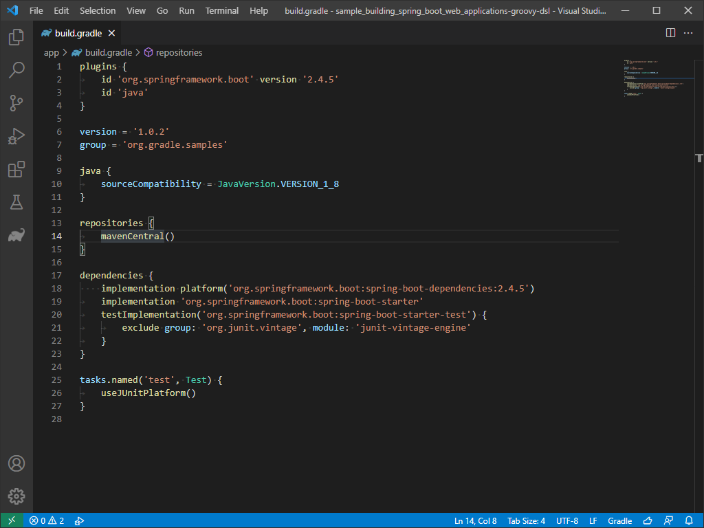
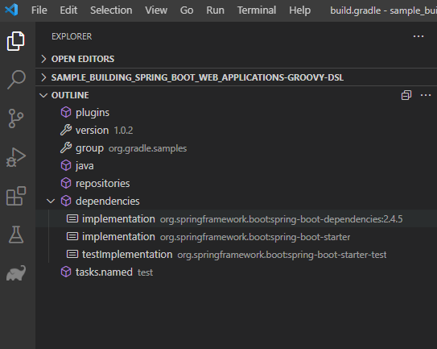
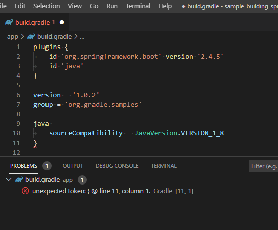

VS Code 中的 Java 构建工具
本文档概述了如何在 Visual Studio Code 中使用 Java 构建工具。内容涵盖了 Maven for Java 和 Gradle for Java 扩展以及其他工具。
如果您在使用以下功能时遇到任何问题，可以通过提交 issue 与我们联系。
Maven
Maven 是一款帮助您管理 Java 项目并自动化应用程序构建的软件工具。适用于 Visual Studio Code 的 Maven for Java 扩展提供了完全集成的 Maven 支持，让您可以探索 Maven 项目、执行 Maven 命令，以及运行构建生命周期和插件的目标。我们建议您安装 Extension Pack for Java，其中包含了 Maven 支持以及其他重要的 Java 开发功能。
探索 Maven 项目
加载 Maven 项目后，扩展将被激活，并自动扫描工作区中的 pom.xml 文件，然后侧边栏显示所有的 Maven 项目及其模块。

解析未知类型
Maven 扩展还支持搜索 Maven Central 来解析源代码中的未知类型。您可以通过选择悬停时显示的 Resolve unknown type 链接来执行此操作。
使用 POM.xml
该扩展提供了代码片段和自动补全功能，可基于本地 Maven 仓库添加 Maven 依赖项。来看看通过这些便捷功能向 pom.xml 添加新依赖项有多容易。
该扩展还允许您生成有效的 POM。
您也可以使用 Maven: Add a Dependency 命令（或 maven.project.addDependency）来帮助向 pom.xml 添加新依赖项。此过程是交互式的。
您还可以通过项目视图添加依赖项，这会调用相同的 Maven 命令。
此外，VS Code 还支持在树视图中显示依赖项，让您可以在一个地方检查项目中的所有依赖项并排查潜在问题。
执行 Maven 命令与目标
通过右键单击资源管理器中的每个 Maven 项目，您可以方便地运行 Maven 目标。
扩展还会保留每个项目目标的执行历史，因此您可以快速重新运行之前的命令，这在运行较长的自定义目标时非常有用。
有两种方法可以重新运行目标：
- 在命令面板中，运行 Maven: History，然后选择一个项目并从其历史记录中选择一条命令。
- 右键单击项目并选择 History。然后您可以从历史记录中选择之前的命令。
您还可以在设置中指定常用的命令，以便将来执行。
对于项目中使用的每个插件，扩展还提供了一种便捷的方式来访问每个插件中的目标。
要调试 Maven 目标，请右键单击目标并开始调试。Maven 扩展将使用正确的参数调用 Java 调试器。这是一个方便、省时的功能。
从 Maven Archetype 生成项目
此扩展提供的另一个便捷功能是从 Archetype 生成 Maven 项目。扩展会加载本地/远程目录中列出的原型。选择后，扩展会向终端发送 mvn archetype:generate -D... 命令。
有几种方法可以创建 Maven 项目：
- 在 Maven Explorer 中，选择 + Create Maven Project 按钮。

- 打开命令面板（
kb(workbench.action.showCommands)），搜索 Create Java Project 命令。
- 右键单击目标文件夹并选择 Create Maven Project。
Gradle
VS Code 通过 Gradle for Java 扩展支持 Gradle Java 项目（不包括 Android）。该扩展提供了以下几个组件来提升您的 Gradle Java 项目体验：
- Gradle Build Server： Gradle Build Server 用于导入 Gradle 项目并将构建任务委托给 Gradle 守护进程，确保项目输出与从命令行运行 Gradle 任务时保持一致。
- 可视化界面： 允许您查看和管理 Gradle 任务与项目依赖项，并直接在 VS Code 中运行 Gradle 任务。
- Gradle Language Server： 为 Gradle 构建文件提供更好的编写体验，包括语法高亮、错误报告和自动补全。
Gradle Build Server
默认情况下，如果您已安装 Gradle for Java 扩展，则使用 Gradle Build Server 来导入 Gradle 项目。您可以通过设置 java.gradle.buildServer.enabled 来开启或关闭 Gradle Build Server。
您可以在 Build Server for Gradle (Build) 输出通道中查看 Gradle 构建输出，并在 Build Server for Gradle (Log) 输出通道中跟踪 VS Code 与 Gradle Build Server 之间的交互。
将测试委托给 Gradle
该扩展支持将测试执行委托给 Gradle。您可以在 Testing Explorer 中配置要使用的测试配置文件。
注意：请确保您已安装 Test Runner for Java 扩展才能使用此功能。
使用 Gradle 任务
当您在 VSCode 中打开一个 Gradle 项目时，可以通过点击 Gradle 侧边栏项找到一些有用的 Gradle 视图。Gradle Projects 视图列出了工作区中找到的所有 Gradle 项目。您可以在此处查看、运行或调试 Gradle 任务。
当工作区中有很多 Gradle 任务时，可能很难找到特定的任务。该扩展提供了 Pinned Tasks 视图来帮助您固定常用任务，以便在单独的视图中轻松找到它们。您还可以在 Recent Tasks 视图中查看最近执行的任务。
查看 Gradle 依赖项
在 Gradle Projects 视图中，您可以在每个 Gradle 项目项下方找到 Dependencies 项。其中包含了您在指定配置中的所有依赖项，您可以轻松查看项目的依赖项状态。

管理 Gradle 守护进程
Gradle Daemons 视图显示了当前工作区的守护进程状态。它列出了与工作区相同版本的所有正在运行的 Gradle 守护进程。您可以在此视图中选择停止某个特定的守护进程或全部守护进程。
编写构建文件
该扩展在 Gradle 构建文件上提供了一些有用的编写功能。
打开 Groovy Gradle 文件时，扩展将分析 Gradle 文件并提供语义标记信息，从而提供更精确的高亮效果。

在 Outline 视图中，扩展提供了已打开的 Gradle 文件的文档符号，这可以帮助您轻松导航到文件的任何部分。

如果在打开的 Gradle 文件中存在任何语法错误（缺少字符、找不到类型等），您可以在 Problems 视图中找到它们。

该扩展支持 Gradle 文件的基本自动补全功能，当您尝试在 Gradle 脚本中键入 Gradle 闭包或属性时，扩展会为您建议可用的闭包或属性。
当您尝试声明新依赖项时，扩展会为您提供依赖项候选列表。
其他资源
请访问 Maven 扩展的 GitHub Repo 以获取其他配置和故障排除指南。
除了 Maven 之外，如果您使用 Bazel 来构建和测试项目，还有一个 Bazel 扩展。
下一步
继续阅读以下内容以了解更多：